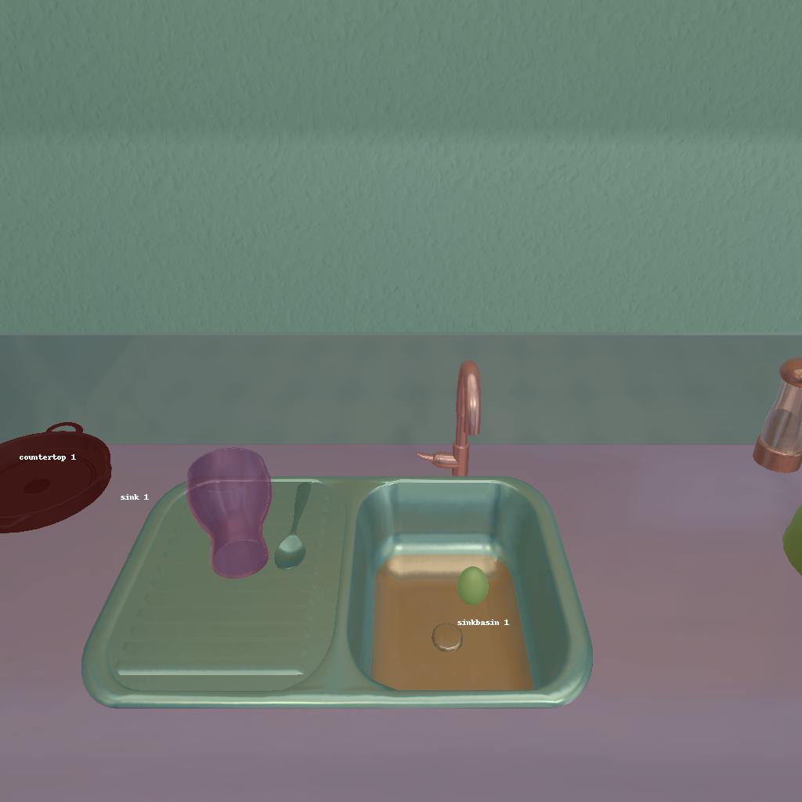

---------------------------------------------------------task: 22---------------------------------------------------------
--------------------------------------------------------------------------------------------------------------------------------------------------------------------
--------------------------------------------------------------------------------------------------------------------------------------------------------------------
Step:--------------------------------------------------------------------------1-------------------------------------------------------------------------------
----------------------------------------
VLM Prompt:
Image1:
Image2:
**Instruction**
1. Analyze the provided image to identify all visible household objects, focusing on those relevant to the task description "put a hot egg in countertop."
2. Use the analysis of the image and the task hint "The agent must find an object of the desired type, pick it up, go to a microwave, heat the object with the microwave, then find the correct location to place it, and put it down there. The agent does not need to use the microwave button or open the microwave to heat the object, and the agent just needs to do action that is "heat the object with the microwave"." to answer the question: what is the most reasonable action in the choices for the task description "put a hot egg in countertop"?
4. Decide and write the answer using the template: The answer is: (i): , where i is the real number. If there is no desired object in the image, search every place based on **Initial Observation** to find the object. And if no one is exactly correct, choose a similar answer.
**Initial Observation**
You are in the middle of a room. Looking quickly around you, you can see cabinet (1-18), countertop (1-4), sink (1), drawer (1-7), sinkbasin (1), coffeemachine (1), microwave (1), garbagecan (1), stoveburner (1-4), toaster (1), fridge (1)
**Answer Choices**
(1): go to cabinet 1
(2): go to cabinet 2
(3): go to countertop 1
(4): go to cabinet 3
(5): go to cabinet 4
(6): go to cabinet 5
(7): go to sink 1
(8): go to cabinet 6
(9): go to drawer 1
(10): go to drawer 2
(11): go to sinkbasin 1
(12): go to cabinet 7
(13): go to cabinet 8
(14): go to coffeemachine 1
(15): go to microwave 1
(16): go to cabinet 9
(17): go to countertop 2
(18): go to cabinet 10
(19): go to drawer 3
(20): go to drawer 4
(21): go to garbagecan 1
(22): go to drawer 5
(23): go to cabinet 11
(24): go to cabinet 12
(25): go to cabinet 13
(26): go to cabinet 14
(27): go to stoveburner 1
(28): go to countertop 3
(29): go to stoveburner 2
(30): go to stoveburner 3
(31): go to stoveburner 4
(32): go to drawer 6
(33): go to cabinet 15
(34): go to cabinet 16
(35): go to cabinet 17
(36): go to cabinet 18
(37): go to toaster 1
(38): go to drawer 7
(39): go to countertop 4
(40): go to fridge 1
**Answer**
Let's think step by step by following the instructions.
----------------------------------------
----------------------------------------
Original Response:
First, we need to find an egg, which is not visible in the provided images. Therefore, we need to search every place based on the initial observation to find the egg. Cabinets are common places where eggs could be stored.
Second, after finding the egg, we must heat it using the microwave. The instruction specifies that we do not need to use the microwave button or open the microwave; we just need to perform the action "heat the object with the microwave."
Finally, we need to put the hot egg on the countertop. In the images, we can see "countertop 1," which is likely the correct location to place the hot egg after heating it.
Following these steps, the most reasonable action from the choices provided would be first to search the cabinets for the egg. Since "go to cabinet 1" is the first option, it is a logical starting point.
The answer is: (1): go to cabinet 1. If the egg is not found in cabinet 1, we would continue to search the other cabinets in numerical order until the egg is found. After heating the egg in the microwave, we would then go to countertop 1 to place the hot egg.
----------------------------------------
----------------------------------------
>>> Refine Original VLM Response and Get Pure Action: go to cabinet 1
----------------------------------------
-----------------------------------------------------------------
Running time: 9.052624225616455 seconds
Total Money: 10.627980000000006
-----------------------------------------------------------------
-----------------------------------------------------------------
Text Observation:You arrive at loc 0. The cabinet 1 is closed.
-----------------------------------------------------------------
UNSUCCEED